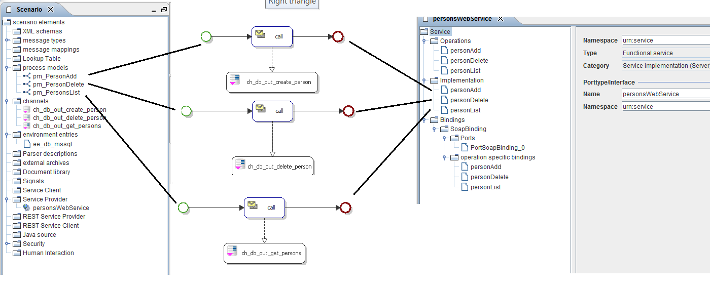
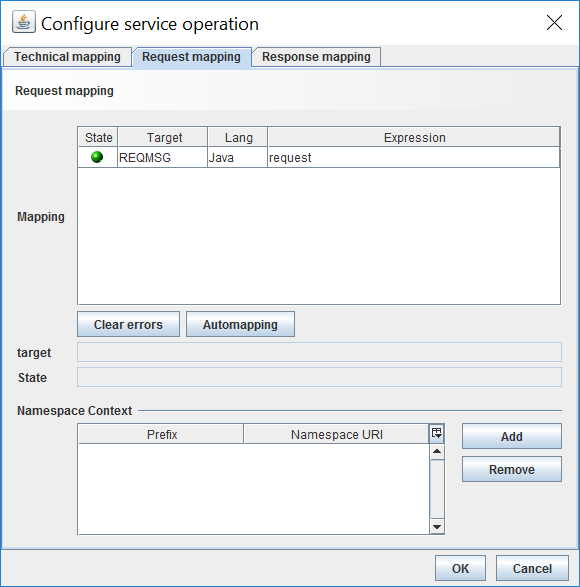
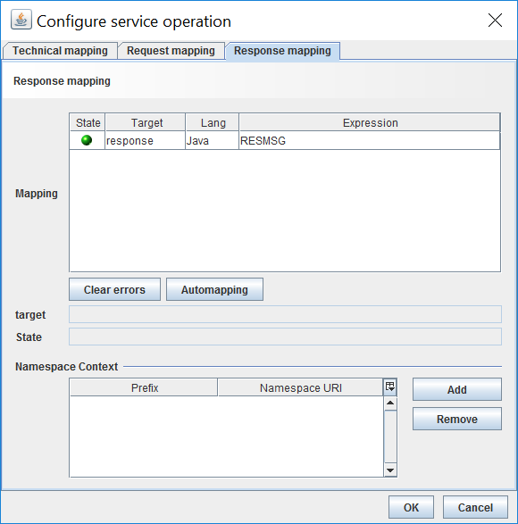
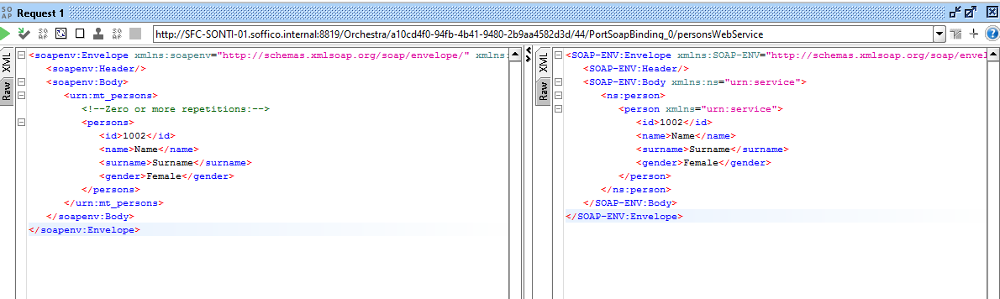
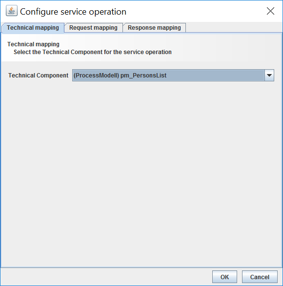

Implementing a SOAP web service

Topic content
Description
Using Orchestra, you will be able to implement SOAP web service of your own, without a need for specific programming language knowledge. In this particular case, Orchestra will act as SOAP web service provider which exposes different API's based upon your requirements. The SOAP Service Provider concept used for creating web service contains only the declaration of SOAP operations that the user wants to implement. The actual implementation is done by creating process model object and assigning it to particular SOAP operation as its implementation.
Problem to Solve
Imagine that you need to implement some basic SOAP web service which will expose different API's in order to perform various CRUD (create, read, update and delete) operations against some database Resources. In the following example, we will try to demonstrate you this concept by using simple domain model describing a Person. We will implement several different SOAP operations which will allow you to perform actions like, creating, listing and deleting particular person entries. The Person entries will be stored in simple MySQL database containing single database table with following information: id, name, surname, gender. In the following example, we will use SOAP-UI as a SOAP client and a simple MySQL DB as database storage.
Under the hood, Orchestra provides you with the mechanisms for mapping different structures and message formats. In our example, you will see how the person data is transformed from one representation state to another using XML and DB table data formats.
Step Overview
In order to successfully create SOAP web service using the Orchestra, several steps need to be followed.
1. Create Orchestra SOAP Service Provider by using wizard dialog
2. Apply configuration setting for created Service Provider (Operation, Implementation, Binding)
2.1 Add a Service Operation
2.2. Add a Service Implementation
2.3 Add a Service Binding
3. Create a process models as an implementation for SOAP Operations
4. Configure ADD SOAP web service operation for creating new person
5. Configure REMOVE SOAP web service operation for deleting a person
6. Configure GET SOAP web service Operation for retrieving person list
Prerequisites
You will need to create a simple MySQL database containing a Person table. Enable access to this database for a particular user which will be used in order to make a successful database connection. Some basic knowledge for creating Orchestra process models and different database channels is required.
Used Concept
Orchestra introduces SOAP Service Provider concept which can be used in order to implement SOAP web service.
Steps
Step 1. Create Orchestra SOAP Service Provider by using wizard dialog.
Define new service provider.
Create new service provider
Step 2. Apply configuration setting for created Service Provider (Operation, Implementation, Binding)
2.1 Add a Service Operation
Implementing a SOAP web service provider - Add Operation
2.2. Add a Service Implementation
Implementing a SOAP Web Service - Create implementation
Implementing a SOAP web service - Technical component
2.3 Add a Service Binding
Implementing a SOAP Web Service provider - Add binding
Implementing a SOAP web service - Add SOAP binding
Step 3. Create a process models as an implementation for SOAP Operations
This step will describe details about the implementation of a operation SOAP web service call for creating a new person. Please note that for each SOAP operation declared in your Web Service provider you need to create a corresponding process model as an implementation of the operation. At the end of this step, we will show you a complete list of process models and channels used for our example without going into details about its implementations. All three process models are very similar with the differences in Database Outbound channels used in them for accessing database layer.
The process model name pm_PersonAdd used for this implementation is using Database Outbound channel for accessing database resources for a person domain model. See image below.
Implementing a SOAP Web Service - Add Person Process Model
The input parameters of this process model is REQMSG as a new person message containing information about new person entry would be create.
Implementing a SOAP Web Service - Process Model
Properties
The Database outbound Channel ch_db_out_create_person used in this process model will create a new person entry. The input parameters for the channel are persid, persname, perssurname and a persgender information about a person. The output message of the channel call will contain information about create person entry.
Implementing a SOAP Web Service - Create a Channels
Note: In order to connect to desired database (in our case DB containing person entries) using Database Outbound channel, you will need to create database connection environment entry (ee_person_db). In the image below you can see the environment entry configuration for accessing MS SQL "SampleDB" database used in our example.
Implementing a SOAP Web Service - Database connection
The input parameters of the channel are extracted from the REQMSG using XPath expressions. This is configured in the call activity of the process model.
Implementing a SOAP Web Service - A call acitivity parameter assignment
Also, the output message of the channel will be forwarded to the Web Service Provider and will be shown as the response SOAP client call.
Implementing a SOAP Web Service - Process variable assignment
To summarize the process model implementation. The process model receives information about a person, contained in the XML message together with the person id. It extracts the values from the message (REQMSG) and performs a call to a channel with the extracted input parameters. The output message (person) of the channel execution will contain information about created person and it will be assigned as an output value of the process model. The next step is to integrate the process model as an implementation of operation in our Web Service provider.
The following image shows the complete list of the process models and the corresponding channels used as an implementation for each service operation inside our Web Service. The usage of those process models will be described in Steps 4, 5 and 6.

Step 4 - Configure operation web service for creating new person.
This step will describe detail about the implementation of operation web service call for creating a new person entry.
•Open previously created Web Service provider.
•Click on the Service > Operations and right-click to select add operations as below.
•The following information should assign in the operation configuration panel.
•Click on the Edit mapping button to open the configuration service operation dialog.
Within this dialog, you will find three different views for configuring the implementation of your service operations. Technical mapping, Request mapping, Response mapping view are available.
•In the Technical mapping view, select the process model for this service operation.
This example select pm_PersonAdd process model created in step 3.
•In the Request mapping view, assign request (the message containing the body of the request) values to corresponding input parameters of the selected process model.

•In the Response mapping view assign RESMSG message (output message of the process model) to the response of the method call. This message will be shown as the response if the request call.

•Save the changes and executes request in order to test the service implementation. You can use SOAP-UI Client to call a webservice.

Step 5 - Configure DELETE service operation for deleting a person.
This step will describe detail about the implementation of a DELETE web service call for deleting a person by person id value.
•Open previously created Service provider.
•Click on the Service > Operations and right-click to select add operations as below.
Implementing a SOAP Web Service - Add a new delete Operation
•Click on the Edit mapping button to open the configuration service operation dialog.
Within this dialog, you will find three different views for configuring the implementation of your service operations. Technical mapping, Request mapping, Response mapping view are available.
•In the Technical mapping view select the process model for this service operation implementation.
•Select pm_PersonDelete process model operation.
Implementing a SOAP Web Service - delete person process model to Technical mapping
•In the Request mapping view assign the persid value.
•Save the changes and executes request in order to test the service implementation. You can use SOAP-UI Client to call a webservice.
Step 6 - Configure GET service operation for retrieving a person list.
This step will describe detail about the implementation of a GET web service call for deleting a person by person id value.
•Open previously created Service provider.
•Click on the Service > Operations and right-click to select add operations as below.
•
Implementing a SOAP Web Service - Add a new delete Operation
•Click on the Edit mapping button to open the configuration service operation dialog.
Within this dialog, you will find three different views for configuring the implementation of your service operations. Technical mapping, Request mapping, Response mapping view are available.
•In the Technical mapping view select the process model for this service operation implementation.
•Select pm_PersonList process model operation.

•In the Request mapping view assign the persid value.
•Save the changes and executes request in order to test the service implementation. You can use SOAP-UI Client to call a webservice.
Summary
In this topic, we introduced you with a concept of web service provider and the mechanisms to leverage different Orchestra concepts on order to create your own web service provider. We shown you have to integrated a process model as an implementation of your web service operation by using technical mapping functionality described in previous steps. By using Database Outbound channels inside the process models Orchestra gives you a possibility to access different resources and perform CRUD operations by executing web service call against implementation web service.